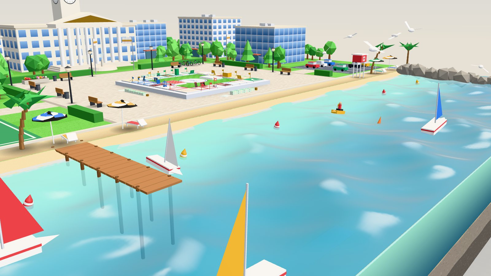
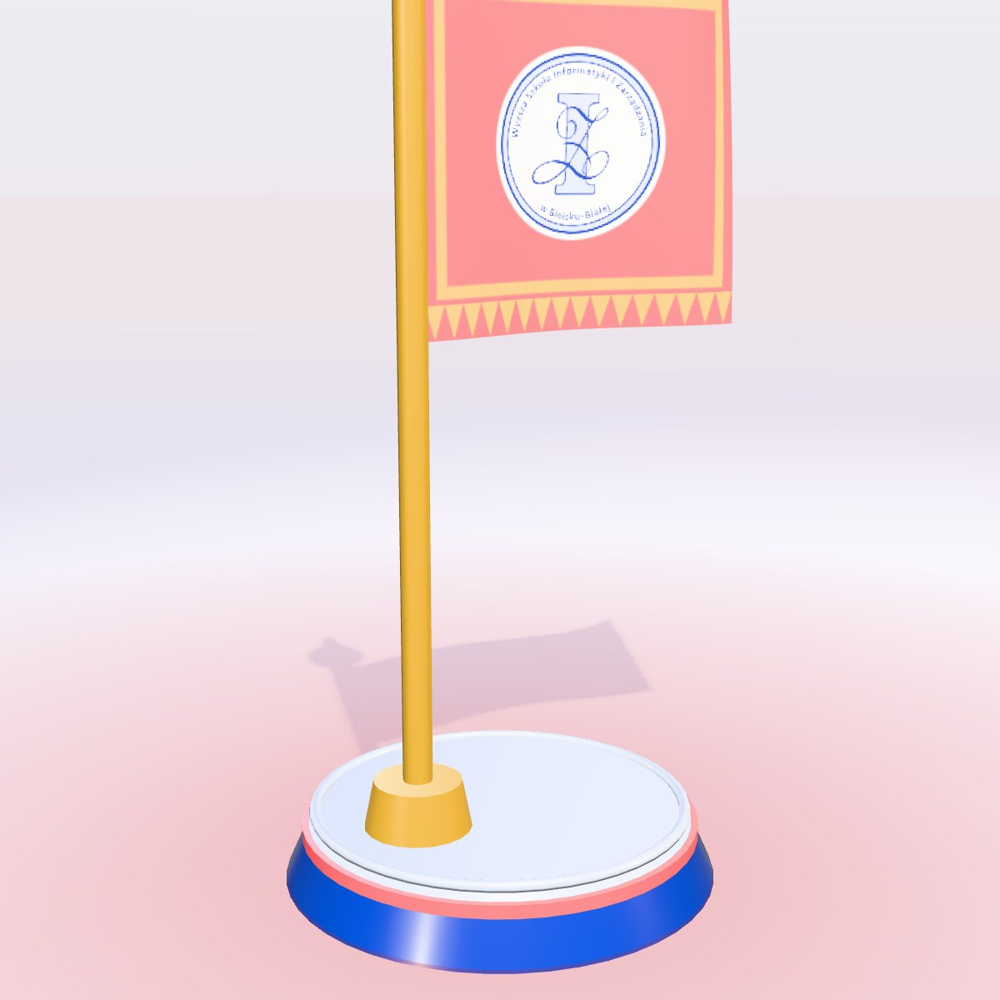
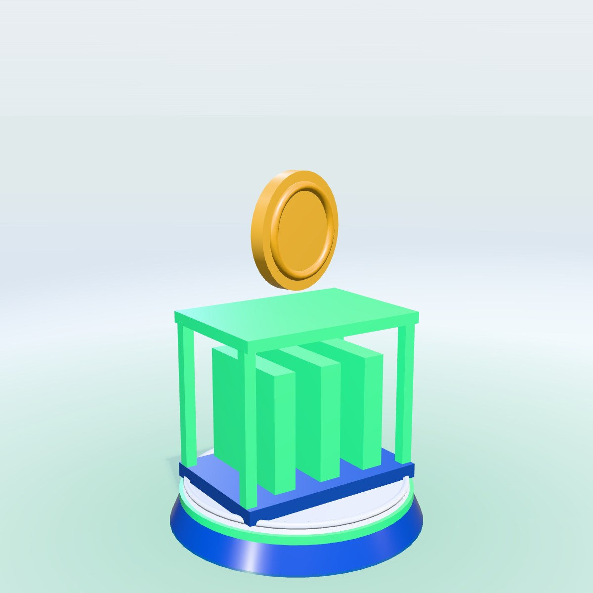
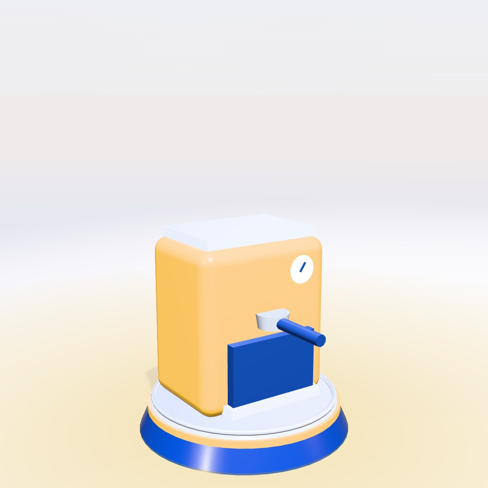
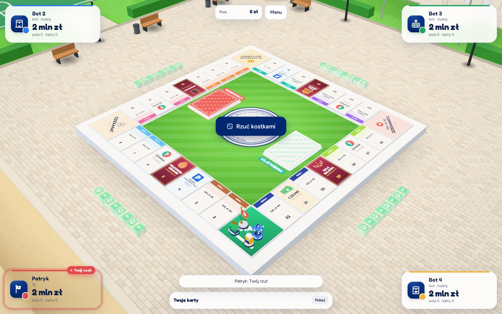
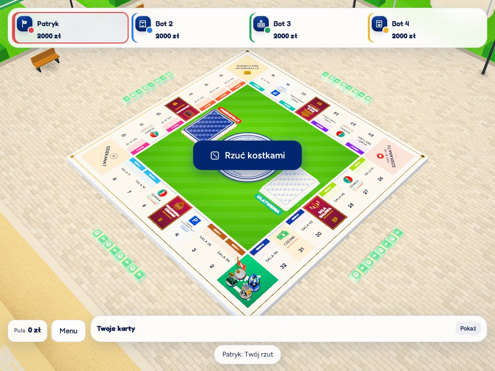

Uczelnia,
jakiej jeszcze nie znasz

Praca inżynierska · WSiZ Bielsko-Biała
WSiZ Tour
Gra planszowa 3D o Twojej uczelni

Kampus nad wodą
Uniwersytet z jednej strony,
wakacje z drugiej

Rzuć
Odpowiedz

Kupuj
Buduj

Pionek 01SztandarDla tych, którzy prowadzą.

Pionek 02Drukarka 3DDla tych, którzy budują.

Pionek 03KoparkaDla tych, którzy liczą.

Pionek 04EkspresDla tych, którzy nie śpią przed sesją.

Pięć poziomów
Od telefonu
do serwerowni
Komputer · tablet · telefon
Graj, gdzie chcesz i kiedy chcesz.




Wiedza się opłaca.
0pola na planszy
0akty własności
0pionki
0 sna odpowiedź
WSiZ Tour
Zagraj w swoją uczelnię w przeglądarce, na każdym ekranie.
Zagraj teraz
Wyższa Szkoła Informatyki i Zarządzania w Bielsku-Białej · praca inżynierska
Muzyka: „Epic Cinematic Trailer | ELITE”, Alex-Productions (onsound.eu), licencja CC BY 3.0